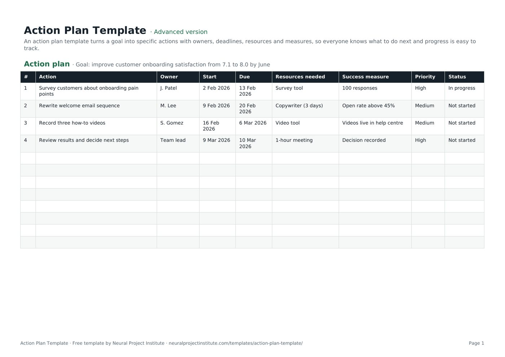

Free Action Plan Template (Google Sheets, Excel, PDF)
This free action plan template turns one goal into a short list of specific actions, each with an owner, start and due dates, the resources it needs, a measure of success, a priority and a status. Download it for Google Sheets, Excel or as a printable PDF, in a beginner, advanced or expert version.

Key takeaways
- An action plan answers four questions for every step: what, who, by when and how you will know it is done.
- Start with one measurable goal; every action in the plan should move you towards it.
- Give each action one owner and a due date, even when several people help.
- Priority and status dropdowns make the plan easy to sort, filter and review in a weekly meeting.
- Choose beginner for a quick six-column plan, advanced for the full plan with dropdowns, or expert for a dashboard and overdue highlighting.
Free download · no sign-up
Get the action plan template
Pick your level and format: Google Sheets, Excel or a print-ready PDF. Spreadsheets include dropdowns, formulas and sample rows you can overwrite.
What is an action plan template?
An action plan template is a ready-made table for turning a goal into the specific actions needed to reach it. Each row lists one action with an owner, start and due dates, the resources required, a success measure, a priority and a status, so everyone can see what happens next, who is responsible and whether the plan is on track.
Action plans are lighter than a full project plan. They suit situations where the goal is clear and the work is a few weeks or months of focused effort, for example:
- Follow-up actions from a review, audit, lessons learned session or retrospective.
- A small improvement project, such as raising customer satisfaction or reducing a backlog.
- A corrective plan after an incident, missed target or failed inspection.
- A team, department or personal goal for the next quarter.
- Actions agreed in a meeting that need tracking beyond the meeting notes.
If the work needs a detailed scope, budget, schedule and governance, use a project plan template instead, or alongside this one.
Preview the action plan template
Here is the first tab with the sample goal and four example actions included in the download. Replace them with your own.
| # | Action | Owner | Start | Due | Resources needed | Success measure | Priority | Status |
|---|---|---|---|---|---|---|---|---|
| 1 | Survey customers about onboarding pain points | J. Patel | 2 Feb 2026 | 13 Feb 2026 | Survey tool | 100 responses | High | In progress |
| 2 | Rewrite welcome email sequence | M. Lee | 9 Feb 2026 | 20 Feb 2026 | Copywriter (3 days) | Open rate above 45% | Medium | Not started |
| 3 | Record three how-to videos | S. Gomez | 16 Feb 2026 | 6 Mar 2026 | Video tool | Videos live in help centre | Medium | Not started |
| 4 | Review results and decide next steps | Team lead | 9 Mar 2026 | 10 Mar 2026 | 1-hour meeting | Decision recorded | High | Not started |
Sample rows are examples: replace them with your own.
What's in the template
- Action plan: #, Action, Owner, Start, Due, Resources needed, Success measure, Priority, Status
At the top of the sheet there is a line for your goal. Below it, each column captures one part of an action.
| Column | What to record | Example |
|---|---|---|
| Action | One specific task, starting with a verb | Survey customers about onboarding pain points |
| Owner | The one person accountable for finishing it | J. Patel |
| Start / Due | When work begins and the date it must be finished | 2 Feb 2026 / 13 Feb 2026 |
| Resources needed | People, budget, tools or information required | Survey tool |
| Success measure | How you will know the action is done or has worked | 100 responses |
| Priority | Dropdown: High, Medium or Low | High |
| Status | Dropdown: Not started, In progress, On hold, Blocked or Done | In progress |
Beginner, advanced and expert versions
- Beginner: one tab with the essential columns: #, Action, Owner, Start, Due and Priority. Quick to fill in for a simple plan.
- Advanced: the full plan with all nine columns, including Resources needed, Success measure and Status, plus the priority and status dropdowns.
- Expert: the advanced plan plus an Instructions tab, a Dashboard that counts actions by owner, priority and status automatically, colours for status and priority, due dates highlighted in red when an action is overdue and not done, and a Revision history tab.
How to write an action plan with this template
- Write the goal in one measurable sentence. Put it on the goal line at the top, for example 'Improve onboarding satisfaction from 7.1 to 8.0 by June'. Our guide to writing SMART project objectives shows how to make goals specific and measurable.
- List the actions that will reach the goal. Brainstorm with the people who will do the work, then keep only the actions that clearly move the goal. Start each one with a verb: 'Draft', 'Survey', 'Approve', 'Publish'.
- Break large actions down. If an action will take more than a few weeks or needs several people, split it into smaller tasks and activities that one person can own.
- Put actions in a sensible order. Note which actions depend on others finishing first; see task dependencies if the sequence is complex. Number rows in the order you expect to do them.
- Assign one owner and set dates. Agree a start and due date with each owner rather than imposing them. One owner per action keeps accountability clear; if roles are complicated, add a RACI matrix.
- Identify resources. Record what each action needs: people's time, budget, tools, approvals or information. Gaps here are an early warning that a date may slip.
- Define how you will know it is done. Write a success measure for each action, such as a number, a deliverable or a decision recorded.
- Set priority and agree a review rhythm. Mark the actions that matter most as High, then review status weekly or at each team meeting until the goal is met.
Action plan example
Here is a completed action plan for a team that wants to cut the support backlog. The goal line reads: Reduce open support tickets from 420 to under 150 by 30 April.
| # | Action | Owner | Due | Resources needed | Success measure | Priority | Status |
|---|---|---|---|---|---|---|---|
| 1 | Analyse the backlog by ticket type and age | A. Khan | 6 Mar | Help desk report | Top 5 ticket types identified | High | Done |
| 2 | Publish help articles for the top 5 ticket types | R. Osei | 27 Mar | Writer (5 days) | 5 articles live | High | In progress |
| 3 | Close tickets with no reply after 14 days | Support lead | 13 Mar | Macro in help desk | Rule active | Medium | Done |
| 4 | Run two backlog clear-down days | Support lead | 10 Apr | Whole team, 2 days | 120 tickets closed | Medium | Not started |
| 5 | Review results and set the next target | Head of support | 30 Apr | 30-minute meeting | Decision recorded | High | Not started |
Weak and strong actions
| Weak action | Strong action |
|---|---|
| Improve communication | Send a one-page status update to sponsors every Friday (owner: PM, starts 7 March) |
| Look into training | Book two staff on the scheduling course by 15 May (owner: team lead, budget approved) |
| Fix onboarding | Rewrite the three welcome emails and A/B test them for four weeks (owner: M. Lee) |
Strong actions are specific, owned, dated and testable. If you cannot tell whether an action is finished, rewrite it.
Types of action plans
The same template works for most types of action plan. What changes is where the goal and actions come from.
Project action plan
Lists the actions for a small project or one workstream of a larger one. Add milestones as rows with a due date and a 'Decision recorded' or 'Deliverable approved' success measure.
Corrective action plan
Responds to a problem such as a defect, audit finding or missed target. Start with the root cause, using a root cause analysis template, then write actions that remove the cause, not just the symptom. Use the Success measure column to show how you will check the fix worked.
Improvement or business action plan
Closes the gap between where you are and where you want to be, for example a department target for the year. A gap analysis template helps you find the actions; the action plan tracks them.
Personal action plan
Turns a personal or career goal into steps, such as preparing for a certification. Keep the owner column if a mentor or manager supports some actions; otherwise use the beginner version.
Action plan vs project plan, to-do list and OKRs
These tools overlap, and many teams use more than one. The table shows where each fits.
| Action plan | Project plan | To-do list | OKRs | |
|---|---|---|---|---|
| Purpose | Reach one goal through a set of owned actions | Deliver a project's scope on time and budget | Remember and finish individual tasks | Set and measure ambitious objectives |
| Typical size | 5 to 30 actions over weeks or months | Many tasks, phases, budget and risks | Any number of small tasks | A few objectives, each with 2 to 5 key results |
| Includes | Owners, dates, resources, measures, priority, status | Scope, schedule, budget, roles, governance | Task, due date, priority, status | Objectives, key results, targets, progress |
| Our template | This page | Project plan template | To-do list template | OKR template |
A common pattern is to set quarterly OKRs, then write an action plan for each key result. If you have more actions than time, rank them first with a priority list template.
Tips for an action plan that gets done
- Keep actions small. An action that takes more than a few weeks is hard to track. Split it.
- One owner per action. Shared ownership usually means no ownership. Name one person, even if a team does the work.
- Agree dates with owners. People commit to dates they helped set.
- Make 'done' visible. A success measure removes arguments about whether an action is finished.
- Review on a fixed rhythm. A short weekly review of overdue and blocked actions keeps momentum. Report progress upwards in your project status report.
- Prune the plan. Close or replace actions that no longer help the goal rather than leaving them open.
- Watch for blockers. When an action is Blocked for more than a few days, record the problem in an issue log and escalate it.
- Look across plans. If you run several action plans at once, our guide to managing multiple projects covers how to balance them.
Related templates and guides
 Project Plan TemplateFree project plan template with goals, scope, deliverables, tasks, owners, dates and…Beginner · Advanced · Expert
Project Plan TemplateFree project plan template with goals, scope, deliverables, tasks, owners, dates and…Beginner · Advanced · Expert To-Do List TemplateFree to-do list template with priority, due date, category and status, plus a weekly…Beginner · Advanced · Expert
To-Do List TemplateFree to-do list template with priority, due date, category and status, plus a weekly…Beginner · Advanced · Expert Priority List TemplateFree priority list template that scores tasks by importance and urgency and sorts them…Beginner · Advanced · Expert
Priority List TemplateFree priority list template that scores tasks by importance and urgency and sorts them…Beginner · Advanced · Expert OKR TemplateFree OKR template to set objectives and key results, track progress and score them each…Beginner · Advanced · Expert
OKR TemplateFree OKR template to set objectives and key results, track progress and score them each…Beginner · Advanced · Expert Project Charter TemplateFree project charter template covering purpose, objectives, scope, milestones, budget,…Beginner · Advanced · Expert
Project Charter TemplateFree project charter template covering purpose, objectives, scope, milestones, budget,…Beginner · Advanced · Expert Work Breakdown Structure (WBS) TemplateFree work breakdown structure template with WBS codes, levels, deliverables, owners,…Beginner · Advanced · Expert
Work Breakdown Structure (WBS) TemplateFree work breakdown structure template with WBS codes, levels, deliverables, owners,…Beginner · Advanced · Expert- Project Objectives: How to Write SMART Goals (With Examples)
- Managing Multiple Projects: A Practical System That Works
- Lessons Learned in Project Management: Guide and Examples
Once the goal is met, capture what worked so the next plan is easier.
Frequently asked questions
What is an action plan template?
An action plan template is a ready-made table that lists the actions needed to reach a goal, with an owner, start and due dates, resources, a success measure, a priority and a status for each one.
What should an action plan include?
A clear, measurable goal and, for each action: what will be done, who owns it, when it starts and is due, what resources it needs, how success will be measured, its priority and its current status.
How do I write an action plan?
Write one measurable goal, list the actions that will reach it, break large actions down, put them in order, assign one owner and dates to each, note resources and success measures, set priorities and review progress regularly.
What are the three parts of an action plan?
In its simplest form an action plan has three parts: the goal, the actions needed to reach it, and the owner and deadline for each action. Resources, success measures and status make it easier to manage.
What is an example of an action plan?
A support team aiming to reduce open tickets from 420 to under 150 might analyse the backlog, publish help articles, close stale tickets and run clear-down days, each with an owner, a due date and a measure. The example on this page shows the full plan.
What is the difference between an action plan and a project plan?
An action plan lists the actions to reach one goal. A project plan is broader: it covers scope, schedule, budget, roles, risks and governance for delivering a project.
What is the difference between an action plan and a to-do list?
A to-do list records tasks to remember. An action plan links every action to a single goal and adds owners, resources, success measures and regular reviews.
What is a corrective action plan?
A corrective action plan lists the actions needed to fix a problem, such as an audit finding or defect, and to stop it recurring. It should start from the root cause and include a way to check the fix worked.
Is a plan of action the same as an action plan?
Yes. 'Plan of action' and 'action plan' mean the same thing, and this template works for both.
How often should I update an action plan?
At least weekly, or at each regular team meeting. Owners should update their own status as work progresses so the plan always reflects reality.
Is this action plan template free and does it work in Google Sheets?
Yes. All three versions are free with no sign-up, in Google Sheets, Excel and PDF formats. The priority and status dropdowns work in both Google Sheets and Excel.
What is the difference between the beginner, advanced and expert versions?
The beginner version has the essential columns on one tab. The advanced version adds resources, success measures, status and dropdowns. The expert version adds instructions, a dashboard that summarises actions by owner, priority and status, colour coding, overdue highlighting and a revision history.